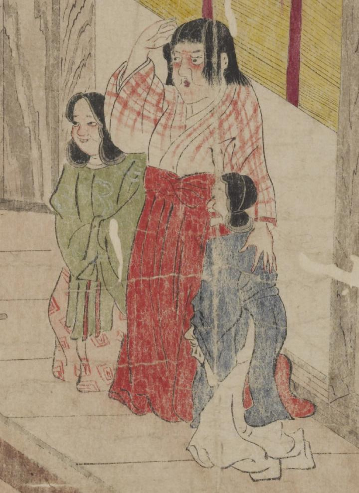

酒呑童子。顔は目を中心に赤く、童髪をしている。赤い格子の着物に、赤い袴を着けている。右手を額にやり、左手は脇に立つ童子の背にあてて立っている。左右に角髪（みずら）の童子が控えている。向って左側の童子は緑色の上着に赤い模様の袴を、右側の童子は青色の上着に白色の袴を着けている。
著作者：坂本弥一郎徳定／出典：親書誌：U426_nichibunken_0080：伊吹山酒呑童子絵巻；イブキヤマシュテンドウジエマキ／日付：2007／資源識別子：U426_nichibunken_0080_0002_0001
Copyright (c)2010- International Research Center for Japanese Studies, Kyoto, Japan. All rights reserved.